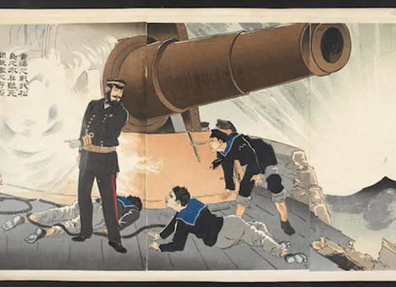
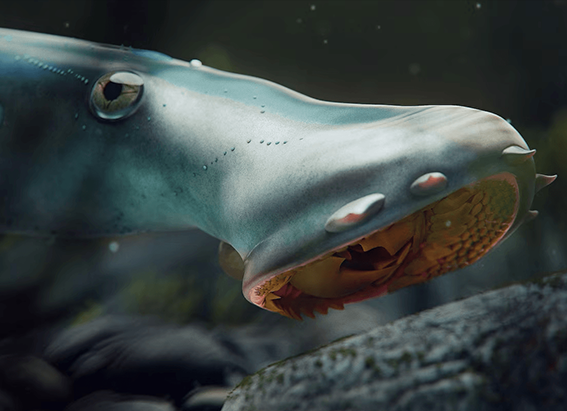

NATIONAL GEOGRAPHIC
The land of the Sleeping Beauty Cave is waking up to tourism
TRAVEL
One autumn morning near the village of Radavc in the Rugova Valley of Kosovo, I took a walking path from my hotel along the White Drin River, a brisk and chilly habitat for trout that flows from the Rusolia peak of the Accursed Mountains nearly a hundred miles southward into Albania.
The river’s waterfall, Kosovo’s largest, is a wondrous spectacle of episodic cascades. Eventually, I continued along the trail for another half-mile, past the season’s final white blooming vestiges of edelweiss, until I arrived at the gated entrance of a cave.
A young woman in her twenties sat in a nearby booth. Her name was Melisa Bojku, and after accepting two Euros, she handed me a hard hat, walked with her keychain to the gate and together we squeezed our way through the cave’s narrow mouth. It was cold and humid inside. A few bats flew above our heads. A musty but not overpowering scent of guano hung in the air. The cave’s floor was slick but not difficult to navigate, and its brawny limestone corridors were discreetly illuminated with green, yellow, and red lights. It was at the same time austere and baroque, like entering a magnificent cathedral of a primordial deity.
Bojku said that the hydrologically chiseled cave was at least two million years old and that the damp stalagmite knobs beside our feet were mere babies, probably about 500 years of age, compared to the glistening stalactites overhead. She pointed out the red iron oxide streaks describing the ancient collision between limestone and volcanic rock. Descending steadily, we eventually could see the dark contour of a subterranean canal. Further beneath us, there dwelled a large if invisible population of crickets that subsisted on insects from the bat guano.
Stalactites in Marble Cave, Gadime
We couldn’t visit an additional room, Bojku apologized, because it contained Neolithic human remains from six thousand years ago that were now being examined by archaeologists. A bullet from World War I had also been found there, as well as a man’s pipe from that era. There may also be evidence of World War II soldiers there, according to stories locals had told her. Who knows what else might turn up during the digging?
There may be a thousand bats in the cave, representing eight different species. “ During the day, they’re chilling out,” Bojku said. With a shy smile, she added, “I like to come in here after I get off work, around four or five in the afternoon, just to stand and listen to them flying around and going crazy. My friends think I’m a little bit strange.”
Cave nerds
The Sleeping Beauty Cave, as the ancient Radavc geological phenomenon is now known, was first discovered in 1968 by Serbian archaeologists. But it would not appear on any Kosovo map, much less be a touristic destination that attracts up to 23,000 adult visitors a year, were it not for the efforts of Fatos Katallozi, the 57 year old outdoorsman who took a perfectly normal schoolgirl in Bojku and trained her to become a cave nerd.
Katalozzi is almost singlehandedly responsible for establishing Kosovo as a major cave-exploration site in Europe. His story is very much in keeping with that of other Kosovars who have shown remarkable determination in rebuilding their war-torn country over the past two decades.
Though the renowned caves of the world include a few made entirely of ice (such as the giant Eisriesenwelt in Werfen, Austria), and others of volcanic lava (like the Cueva de los Verdes in the Canary Islands), the vast majority of them are produced from porous limestone.
The Balkans region, with 70 percent of its earth composed of limestone, is therefore over-abundant with caves. The most famous of these is also Europe’s largest: the 15-mile-long Postojna cave in Slovenia, which was discovered 200 years ago and has attracted a staggering 38 million visitors during that time. Romania’s caves include some that are deeper than Postojna, while a great deal of recent exploration has been devoted to the caves in Albania and Bulgaria.
Though Kosovo is barely the size of Connecticut, it is a nature lover’s small paradise of muscular mountains and glittering waterways. The world has been slow to take note of this. So, frankly, has Kosovo’s government. As the newest country in the Balkans, not to mention the poorest and one that has yet to receive official recognition by its neighbor Serbia, war-scarred Kosovo has not had an easy time selling itself as a vacation spot. The country lacks a Ministry of Tourism. It has only two national parks that are almost completely unstaffed. Kosovo’s underdeveloped tourist industry has therefore relied heavily on the initiative of local protagonists like Katallozi.
I met Katallozi at his business, Outdoor Kosovo, which is situated in the ancient gold and silver trading city of Peja. The city was mostly razed by Serbian troops during the war in 1999 and has subsequently been rebuilt. The exterior of Katallozi’s office still bears scorch marks from the war.
Lanky and with hawkish facial features, Katallozi led me to his jeep, which was loaded down with spelunking gear. We drove northwest, out of the city traffic and another 20 minutes into the Rugova Valley, plunging into a forested range that was electric with autumn foliage and waterfalls seeping out of seemingly every mountain façade.
Comments :
- john Very good
- john Very good
Leave a Reply
Your email address will not be published. Required fields are marked*
Related posts:
-
Why is there a Vitamin K but no Vitamin F
Vitamin C for a cold? A good dose of Vitamin D on a sunny day? We all know that vitamins are critical for our health, but how did they get their names and, more importantly, when were they discovered in the first place?
View article -
This 160-million-year-old fish gouged out its victims’ flesh
Lampreys have been feeding on flesh and blood since the depths of prehistory. These jawless, eel-like creatures have suctioning discs lined with teeth for mouths, which many modern species use to latch
View article -
 COVID-19 can interfere with your period in many ways. Here's how.
COVID-19 can interfere with your period in many ways. Here's how.Raven La Fae, a 32-year-old artist in Calgary, Canada, has always been able to predict their menstrual periods almost to the day; it arrived every 28 days and lasted for five. But after contracting COVID-19 in late 2020,
View article